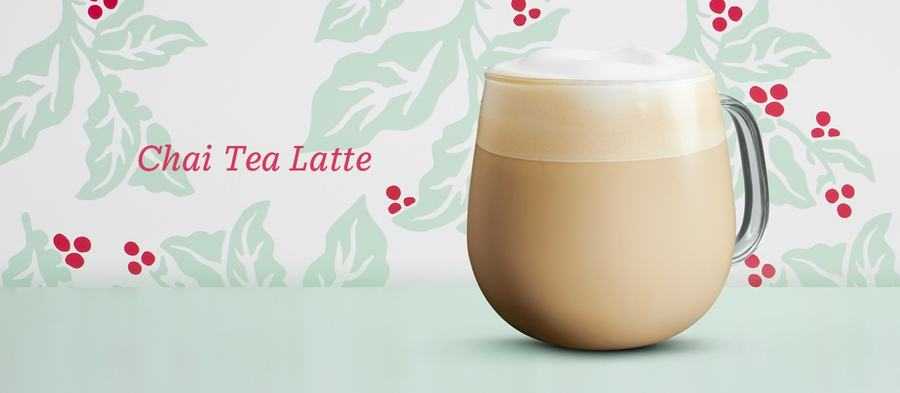
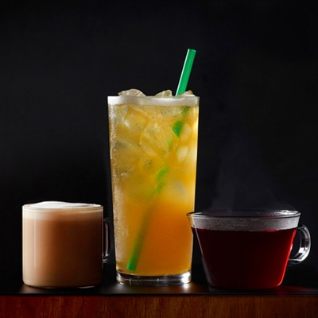
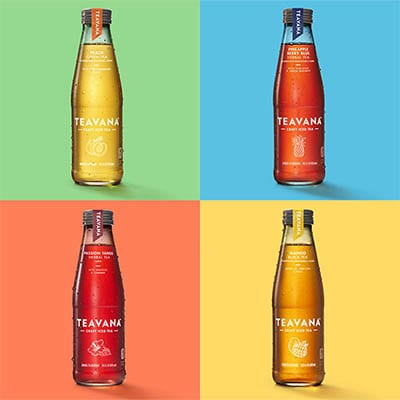

Cold days, meet comforting warmth
Chai tea is made by infusing black tea with warming spices like cardamom, ginger, cinnamon and cloves.
Combinded with steamed milk and topped with foam, the Chai Tea Latte is winter's perfect accompaniment.
Explore the menu

From tea lattes to iced teas to perfectly brewed cups, discover the breadth of handcrafted teas that Starbucks offers
Find your favorite
Teavana Craft Iced Teas

Teavana new bottled craft iced teas are a family of expertly blended iced teas, crafted from the finest teas and botanicals with preminum, natural fruit flavors.